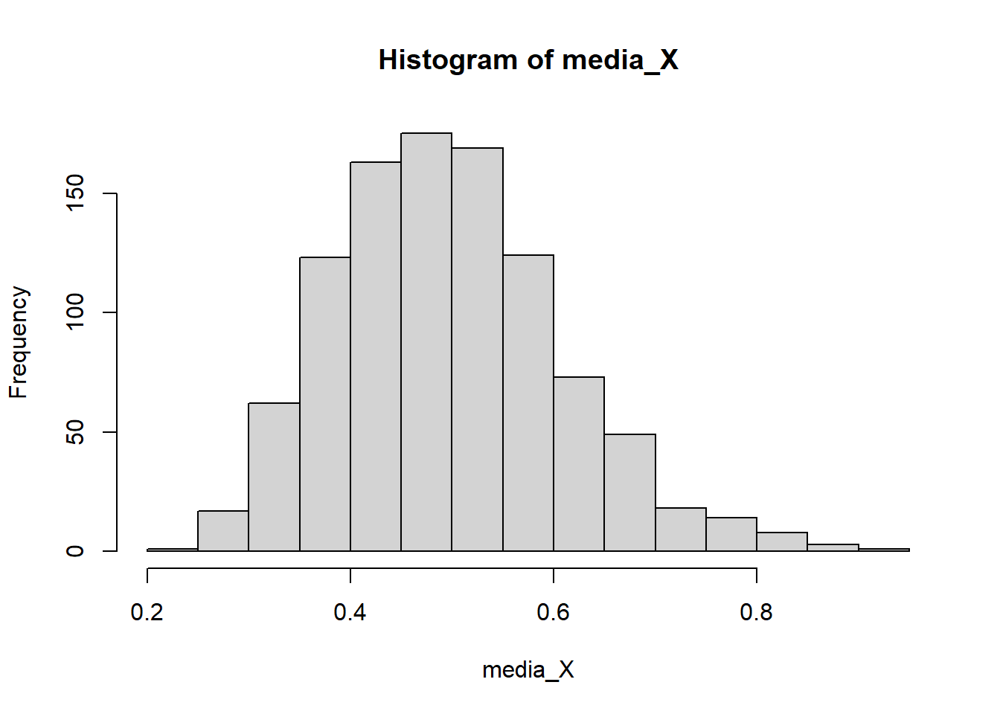
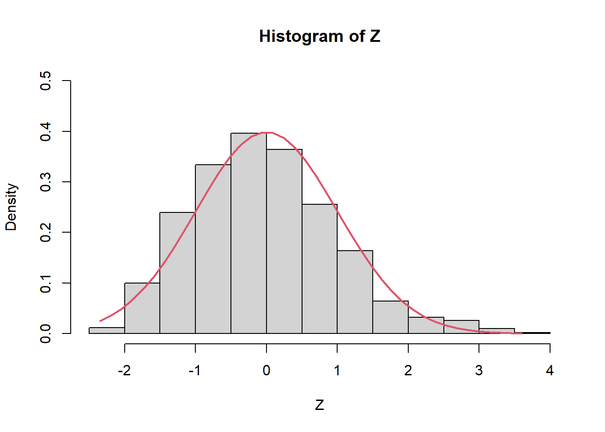
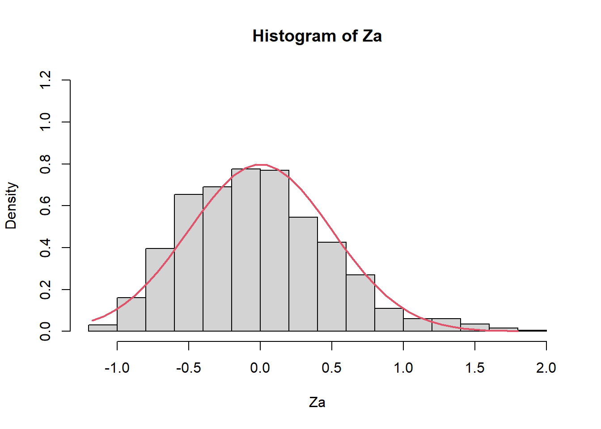
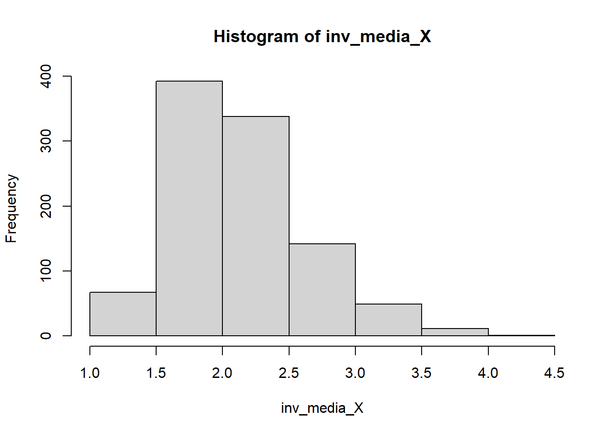
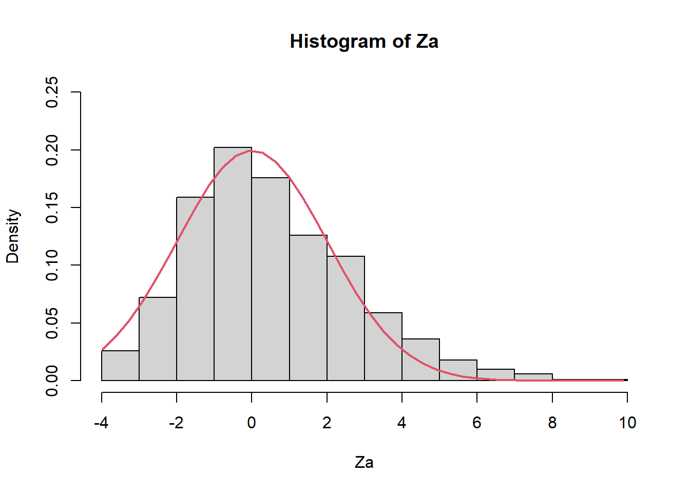
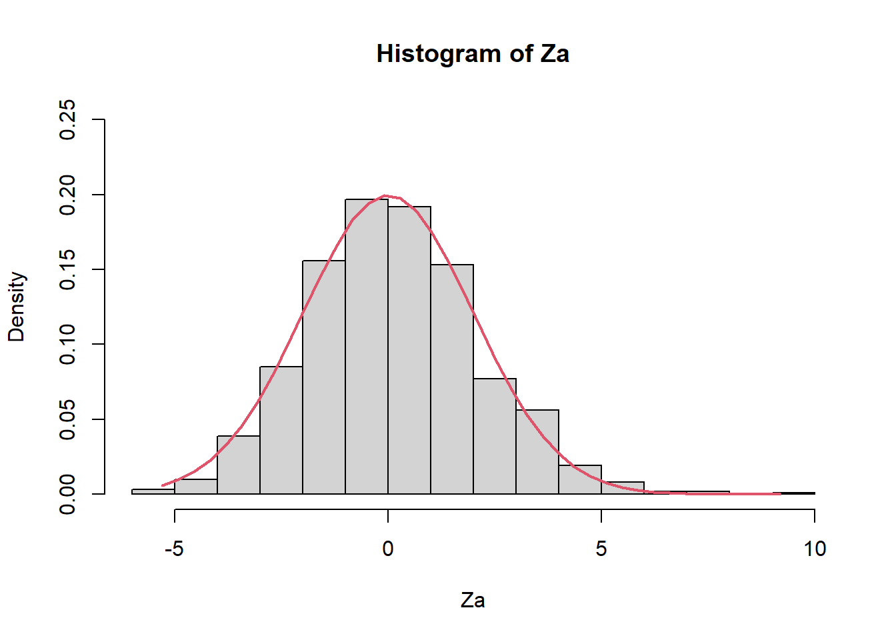
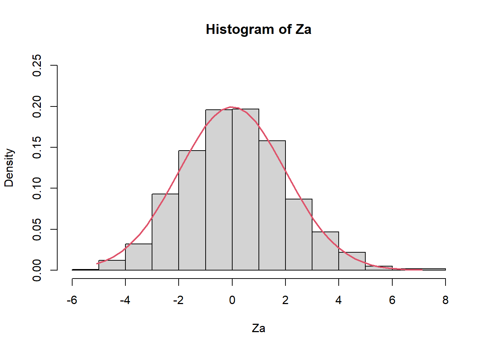
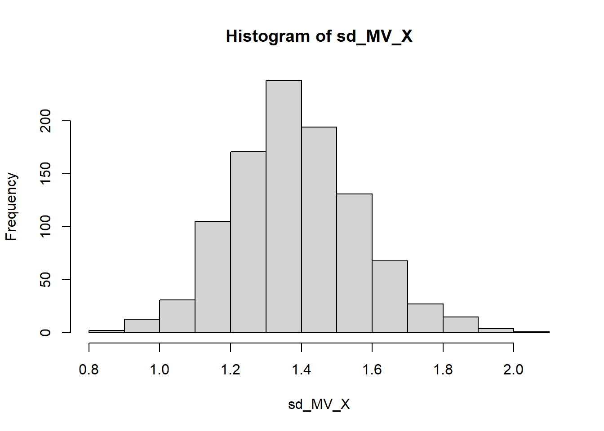
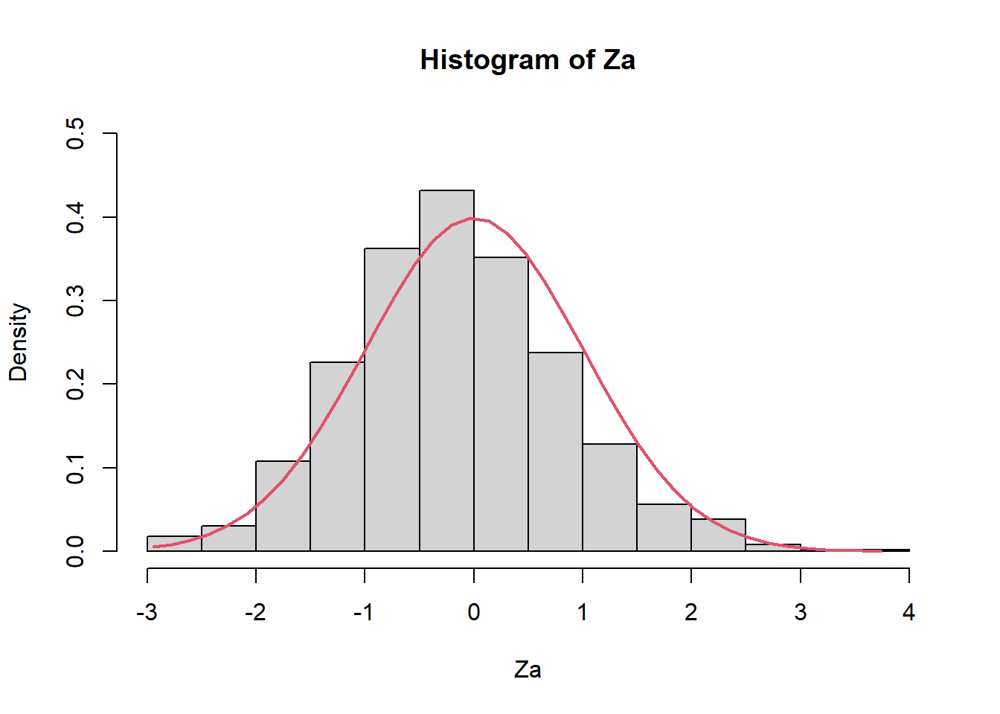
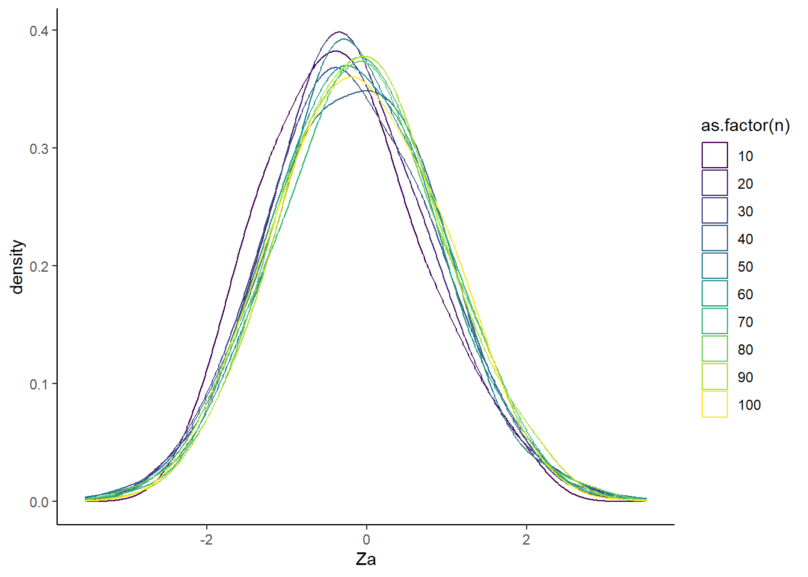

K <- 1000
n <- 20
X <- list()
for(i in 1:K){
X[[i]] <- rexp(n,2) #X es una lista de las K muestras de tamaño 45.
}lab02: Ilustración de EMV para muestras grandes
XS3310 Teoría Estadística
Este documento ilustra de manera intuitiva, por medio de simulaciones, las propiedades del EMV para muestras grandes.
1 EMV de \(\bar{X}\) y \(\bar{X}^{-1}\) de la Distribución Exponencial
Suponga que \(X_1,...,X_n\) una muestra aleatoria tal que \(X_i \sim Exp(\beta=0.5)\), para \(i=1,...,n\).
1.1 Comportamiento de la media muestral
media_X <- sapply(X,mean)
hist(media_X)
mean(media_X)[1] 0.4962818var(media_X)[1] 0.01264798Observe que teóricamente \(E(\bar{X})=0.5\) y \(Var(\bar{X})=\frac{\beta^2}{n}=\frac{0.5^2}{20}=0.0125\). El TLC nos garantiza que \[Z=\frac{\bar{X}-\mu}{\sigma/\sqrt{n}} \overset{d}{\rightarrow} N(0,1).\] Es decir, \(Z\) se aproxima cada vez a la normal estándar cuando \(n\rightarrow \infty\). Por ejemplo, con solo \(n=20\), tenemos
Z=(media_X-0.5)/(sqrt(0.5^2/n))
hist(Z,prob=TRUE,ylim=c(0,0.5))
Z2 <- seq(min(Z), max(Z), length = 40)
lines(Z2, dnorm(Z2, mean = 0, sd = 1), col = 2, lwd = 2)
mean(Z)[1] -0.03325625var(Z)[1] 1.011838De la misma forma, puedo calcular
\[ Z_a=n^{\frac{1}{2}}(\bar{X}-\mu) \overset{d}{\rightarrow} N(0,\sigma^2) \]
Recuerde que para la distribución exponencial, \(\sigma=\beta\).
Za=sqrt(n)*(media_X-0.5)
hist(Za,prob=TRUE,ylim=c(0,1.2))
Z2 <- seq(min(Za), max(Za), length = 40)
lines(Z2, dnorm(Z2, mean = 0, sd = 0.5), col = 2, lwd = 2)
mean(Za)[1] -0.01662812var(Za)[1] 0.25295961.2 Comportamiento de \(\bar{X}^{-1}\)
inv_media_X <- 1/media_X
head(cbind(media_X,inv_media_X)) media_X inv_media_X
[1,] 0.4649204 2.150906
[2,] 0.5897773 1.695555
[3,] 0.4131797 2.420254
[4,] 0.4549265 2.198157
[5,] 0.3540132 2.824753
[6,] 0.5687349 1.758289hist(inv_media_X)
mean(media_X)[1] 0.4962818var(media_X)[1] 0.01264798Usando el resultado con el Método Delta (diapositiva 11 de la clase 8).
\[ \sqrt{n}\bigg[\dfrac{1}{\overline{X}_n}-\dfrac 1\mu\bigg]\xrightarrow{d}N\left(0,\dfrac{\sigma ^2}{\mu ^4}\right) \]
Za=sqrt(n)*(inv_media_X-(1/0.5))
hist(Za,prob=TRUE,ylim=c(0,0.25))
Z2 <- seq(min(Za), max(Za), length = 40)
lines(Z2, dnorm(Z2, mean = 0, sd = sqrt(0.5^2/0.5^4)), col = 2, lwd = 2)
mean(Za)[1] 0.5415072var(Za)[1] 4.8153591.3 Veamos qué pasaría con n grande (n=150).
K <- 1000
n <- 150
X <- list()
for(i in 1:K){
X[[i]] <- rexp(n,2) #X es una lista de las K muestras de tamaño 45.
}media_X <- sapply(X,mean)
inv_media_X <- 1/media_X
Za=sqrt(n)*(inv_media_X-(1/0.5))
hist(Za,prob=TRUE,ylim=c(0,0.25))
Z2 <- seq(min(Za), max(Za), length = 40)
lines(Z2, dnorm(Z2, mean = 0, sd = sqrt(0.5^2/0.5^4)), col = 2, lwd = 2)
mean(Za)[1] 0.1431849var(Za)[1] 4.0896881.4 Veamos qué pasaría con n grande (n=300).
K <- 1000
n <- 300
X <- list()
for(i in 1:K){
X[[i]] <- rexp(n,2) #X es una lista de las K muestras de tamaño 45.
}media_X <- sapply(X,mean)
inv_media_X <- 1/media_X
Za=sqrt(n)*(inv_media_X-(1/0.5))
hist(Za,prob=TRUE,ylim=c(0,0.25))
Z2 <- seq(min(Za), max(Za), length = 40)
lines(Z2, dnorm(Z2, mean = 0, sd = sqrt(0.5^2/0.5^4)), col = 2, lwd = 2)
mean(Za)[1] 0.1319572var(Za)[1] 3.7888772 Comportamiento del EMV de la desviación estándar de una población normal
Suponga que \(X_1,...,X_n \sim N(10,2)\).
K <- 1000
n <- 30
X <- list()
for(i in 1:K){
X[[i]] <- rnorm(n=n,mean=10,sd=sqrt(2))
}Considere el EMV de \(\sigma\):
\[\hat{\sigma} = \left[\frac{\sum\limits_{i=1}^n X_{j}^2}{n}\right]^{1/2}.\]
sd_MV <- function(x){
n <- length(x)
sd_MV <- sqrt(var(x)*(n-1)/n)
return(sd_MV)
}
sd_MV_X <- sapply(X,sd_MV)
hist(sd_MV_X)
mean(sd_MV_X)[1] 1.383205var(sd_MV_X)[1] 0.03225485Sabemos que para muestras grandes, la distirbución de \(\hat{\sigma}\) converge a una distirbución normal con media \(\sigma=\sqrt{2} \approx 1.41\) y variancia \(1/[I(\sigma)]=\left(\frac{2n}{ \sigma^2}\right)^{-1}=\left( \frac{2 \cdot 30}{2} \right)^{-1} =1/30\approx 0.0334\).
Finalmente, podemos presentar el resultado usando la otra expresión:
\[\left[\frac{2n}{\sigma^2} \right]^{1/2}(\hat{\sigma}_n - \sigma) \stackrel{d}{\longrightarrow} N(0,1)\]
Za=sqrt(2*n/2)*(sd_MV_X-sqrt(2))
hist(Za,prob=TRUE,ylim=c(0,0.5))
Z2 <- seq(min(Za), max(Za), length = 40)
lines(Z2, dnorm(Z2, mean = 0, sd = 1), col = 2, lwd = 2)
mean(Za)[1] -0.1698389var(Za)[1] 0.96764552.1 Visualización variando \(n\)
K <- 1000
N <- c(10,20,30,40,50,60,70,80,90,100)
sd_MV_estimador <- list()
sd_MV_X <- list()
for(n in 1:length(N)){
for(i in 1:K){
x <- rnorm(n=N[n],mean=10,sd=sqrt(2))
sd_MV_X[i] <- sd_MV(x)
}
sd_MV_X <- unlist(sd_MV_X)
Za = sqrt(2*N[n]/2)*(sd_MV_X-sqrt(2))
sd_MV_estimador[[n]]= data.frame(Za,n=N[n])
}
resultados = rlist::list.rbind(sd_MV_estimador)
library(ggplot2)
library(hrbrthemes)Warning: package 'hrbrthemes' was built under R version 4.3.3library(viridis)Warning: package 'viridis' was built under R version 4.3.3Loading required package: viridisLitep2 <- ggplot(data=resultados, aes(x=Za, color=as.factor(n))) +
geom_density(adjust=1.5) +
theme_classic()+ scale_color_viridis(discrete = TRUE, option = "D")
p2